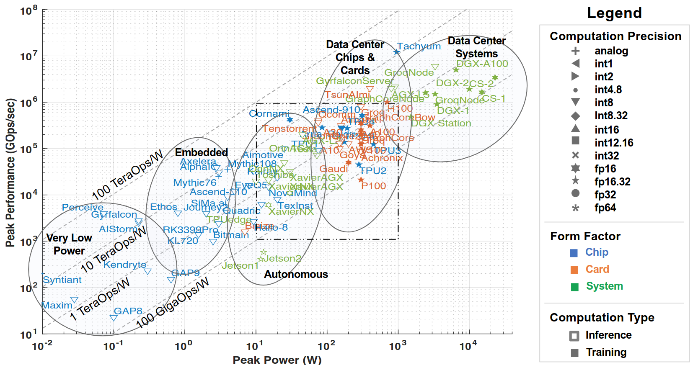
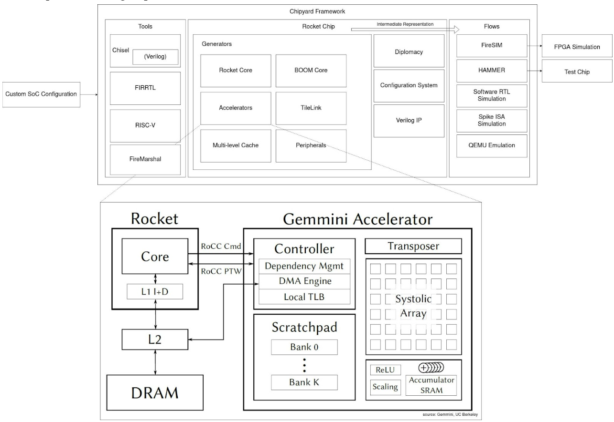
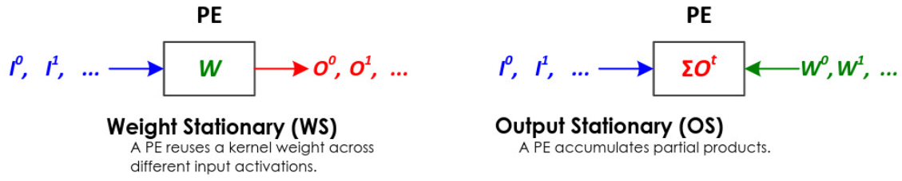
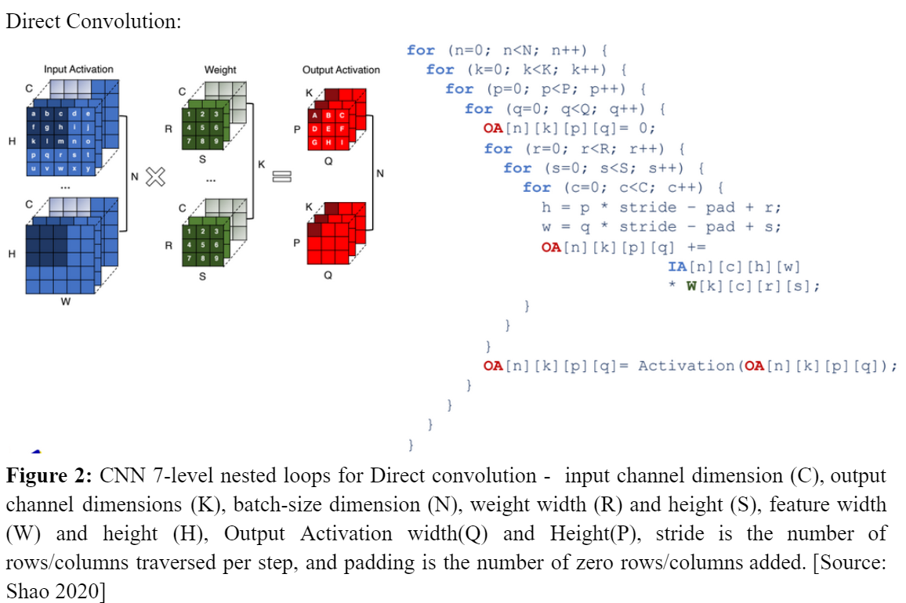
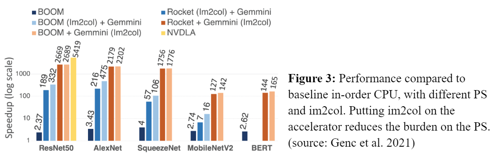
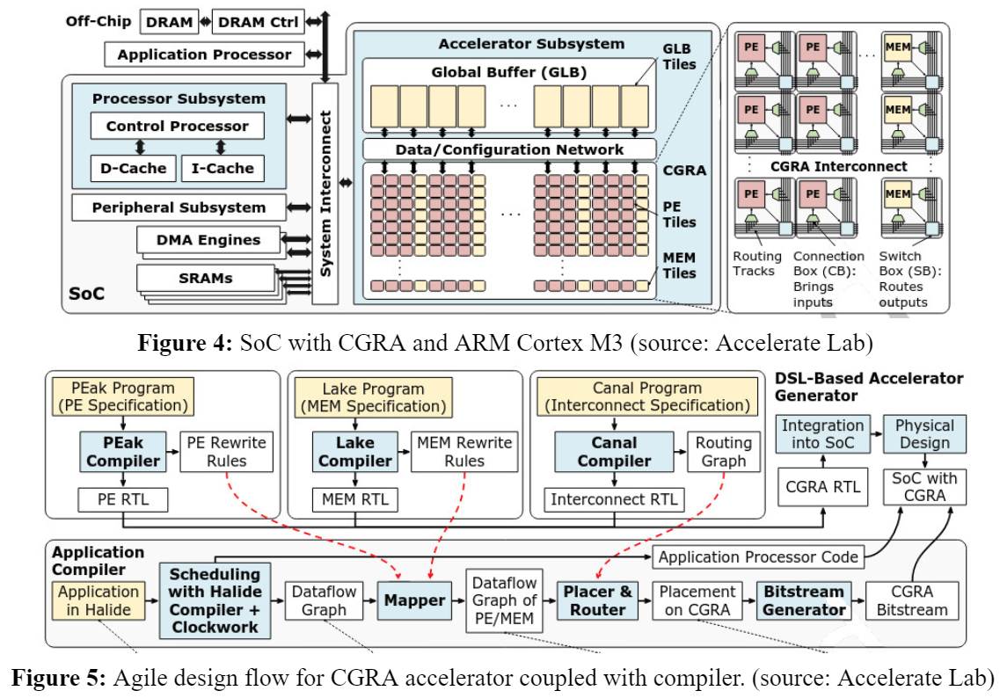
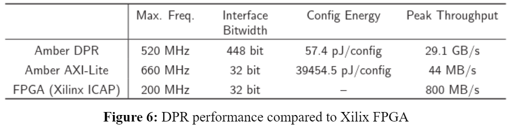
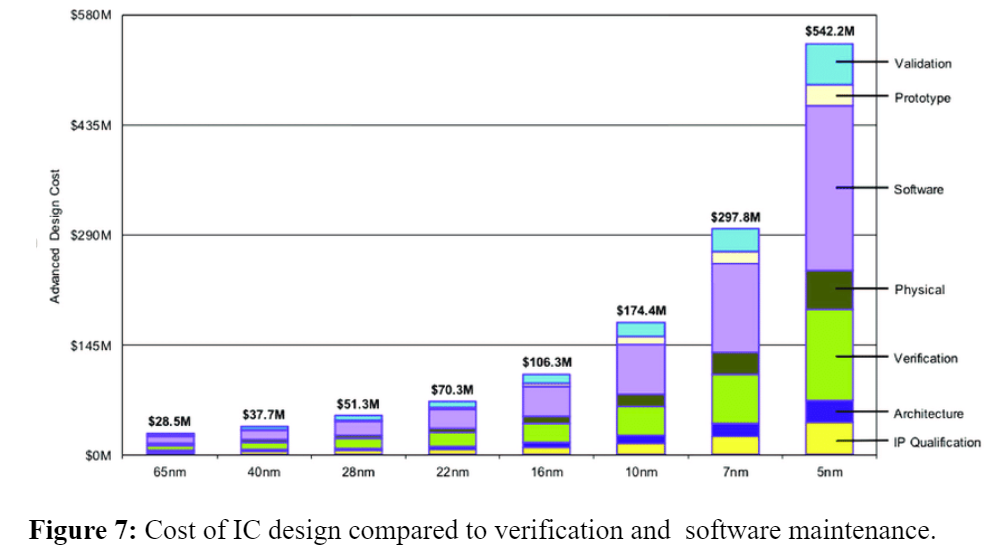

1. Future Computing Systems: Where are we heading post-Moore era? In the post Moore’s Law era, parallelism isn’t going to be the boat for us to set sail for the next generation of computing systems; power is going to be the principal factor dictating the research direction for heterogeneous accelerators. The architectural challenge is to maintain a balance between performance and functional flexibility; and the key QoR metrics to report are computational capability (GOps) and power efficiency (GOps/W), overall computational effectiveness (precision) and full-stack integration. This is highlighted in the AI and ML accelerator trends (Figure 1).

In modern DNN accelerators, the architecture used to train a deep learning model affects the model’s accuracy, speed and even its ability to generalise to new data. This creates a massive multi-dimensional design space to find pareto-optimal configuration per use-case. Typically, a new reliable architecture design from ideation to tape-out takes three to four years by a team - which besides time, incurs a huge development cost (multi-Million $). This motivates us to explore an ASIC development methodology that should allow application experts to configure the lower layers of the computing stack to create these new efficient systems through high-level synthesis, and design reuse through rich parameterization and incremental extensions. This disparages the Waterfall model that has been adopted since the inception of integrated circuits to an Agile model for continuous development and integration for DNN accelerators.
In this short article, we discuss two of the Agile Hardware-Software Co-design Frameworks, namely, Agile Hardware (AHA) initiative at Stanford Accelerate Lab and Chipyard Framework developed at UC Berkeley’s ADEPT (Agile Design of Efficient Processing Technologies) Lab (now, SLICE lab), with emphasis on their respective accelerator architectures and implemented optimizations for accelerating deep neural networks. In section 2, we discuss in detail the Gemmini accelerator and in section 3 we dive into the details of Coarse-Grained Reconfigurable Array (CGRA). Finally, in section 4, we compare and contrast the two approaches, identify their strengths and weaknesses, and present our conclusions.
2. Chipyard and Gemmini
Chipyard + Gemmini are one of the more mature open-source frameworks for custom SoC-accelerator generators (aside from industry, e.g. ASIP designer) that adopts an agile approach. Chipyard is a complete suite for physically realisable SoC design, simulation, validation and full-stack integration to RISC-V and BOOM cores via RoCC port of TileLink to enable configurable generator-based accelerators (such as Gemmini) IP blocks that support rich parameterization and RISC-V ISA extensions. The number of tools are extensive and it would be unjust to briefly summarise. Figure below shows Chipyard workflow and Gemmini integration and attempts to share a glimpse.
Figure 1: Peak performance vs peak power of publically announced accelerators in 2022 [arxiv:2210.04055]

Gemmini is a matrix multiplication accelerator containing:
- 2-tier organised Systolic array for flexible microarchitecture: pipelined tiles, containing PEs (not pipelined) for dot product and accumulation. This enables both systolic spatial array (TPU) and parallel vector engines (NVDLA).
- Connects to RocketCore/BOOM via RoCC; by default maps to L2 shared cache.
- Main memory connects host to Gemmini’s Scratchpad (SRAM) and Accumulator. DMA access keeps latency low.
- Scratchpad stores the inputs, and accumulator stores partial sums and final results.
- Computation happens in weight stationary or output stationary dataflow, which is configurable at run-time/hardened in silicon.
- optionally peripheral circuitry for activation functions ReLU/ReLU6, result precision scaling by powers-of-2 for quantization, and pre-processing e.g. transpose matrix circuit before directing to the systolic array.
- ONNX/C for programming.
- Heuristic algorithms are used for data staging and mapping.

- Systolic array dimensions (tileRows, tileColumns, meshRows, meshColumns)
- Input Stationary/Weight Stationary (dataflow)
- Scratchpad/Accumulator capacity (in Kib) (sp_banks, sp_capacity, acc_capacity)
- Datatypes for I/O and partial accumulations (inputType, outputType, accType)
- Access-execute decoupling queue parameters (ld ,st, ex, rob)
- DMA parameters and scaling factor (optional).
- Custom RISC-V ISA extension support.

Or, can be achieved via GEMM.
Image processing data –> im2col –> Matrix Multiplication
(Needs convolution) (preprocessing) (Nested for loops)
Performance:

Memory partitioning strategy, tiling and scheduling can greatly impact performance of workload. Profiling access patterns in workloads can give better ideas in dataflow optimization. Spatial and Temporal data-reuse can further impact performance. Maximum area (67.1%) is still captured by SRAM on chip, followed by the rocket core and then the accelerator.
In conclusion, what makes Gemmini unique from other implementations is the manufacturability as a full SoC, Linux OS support and Virtual address translation support (along with shared memory access). Dataflow, Bitwidth, Input Dimensions, Bus Size, HOST CPU,Pipelines, Memory and memory banks all affect the performance. Gemmini enables exploration of a vast design space, profile system-level performance using Chipyard + FireMarshal infrastructure and uncover reliability issues that can occur across the stack.
3. Agile Hardware (AHA) of Amber SoC using CGRA
A Coarse Grain Reconfigurable Architecture (CGRA) is a reconfigurable architecture that operates on coarser granularity than traditional reconfigurable architectures such as FPGA (fine-grained). CGRA consists of an array of Processing Elements (PE) and memory (MEM) tiles connected via reconfigurable interconnect that are capable of executing word-level operations and can be reconfigured to minimise idling time through online partial reconfiguration (necessary of edge devices and servers running parallel applications within the fabric).

Each hardware block has its own DSL for PE (PEak), MEM (Lake) and Interconnect (Canal). This is compiled to generate the final RTL and routed to the VLSI flow to generate GDSII. The compilers map applications written in Halide to a CGRA bitstream. It receives updated specifications (rewrite rules, routing graph) from the DSL-based hardware generators, allowing it to compile to evolving CGRA hardware with no manual updates. The coupled accelerator compiler takes the rewrite rules generated by each DSL compiler to map applications to the hardware. Halide (DSL in C/C++) specified applications are mapped to CGRA (Figure 5).
Amber SoC is a 367 GOPS, 538 GOPS/W 16nm SoC designed with the AHA co-design approach for dense linear algebra applications (Figure 4).
- Amber demonstrates 2x speed up compared to baseline FPGA by reduction in idle time through fast (3.5us) dynamic partial reconfiguration (DPR).
- It intelligently handles data access to streaming memory without DMA access (to reduce power consumption) by leveraging the affine data access patterns (e.g. nested for loop) in dense linear algebra applications. This is done using Iteration Domain (range of memory identification), Address Generator (address calculation) and Schedule generator (read/write signals). No manual intervention is necessary as the application compiler handles this task.
- Wide fetch SRAM in streaming memory to reduce energy consumption (48%), and Resource sharing of ID/AD/SG to reduce area (50%).
- It chains together PEs to perform less frequent but necessary algebraic operations (FPdiv, log, sin etc) with very small area overhead (0.2%) and saves 37.8% area compared to on ship complex op circuitry.

- The cost of verification and software maintainability (of both, existing and new codebase) would be the key to determine the way forwards in computing.
- Both face a similar challenge in developing efficient algorithms for mapping data/software programs onto the systolic arrays/CGRA. This can be difficult, especially for large and complex applications. In contrast to systolic arrays, CGRAs are flexible enough to adapt to different applications.
- Both, Systolic Arrays and CGRAs may not perform as well as specialised hardware for certain types of tasks. For example, a general-purpose processor may be faster for tasks that require a high level of sequential processing. In this sense, both are domain-specific architectures.
- In either case, a rigorous approach to system-level verification and validation is a challenge; for which formal methods, DSE tools and profiling tools would be necessary. Further, Physical design needs manual interventions, which can drastically impact performance. This can be mitigated by automated tests for DFM (Design for Manufacturability/Sign-Off).
